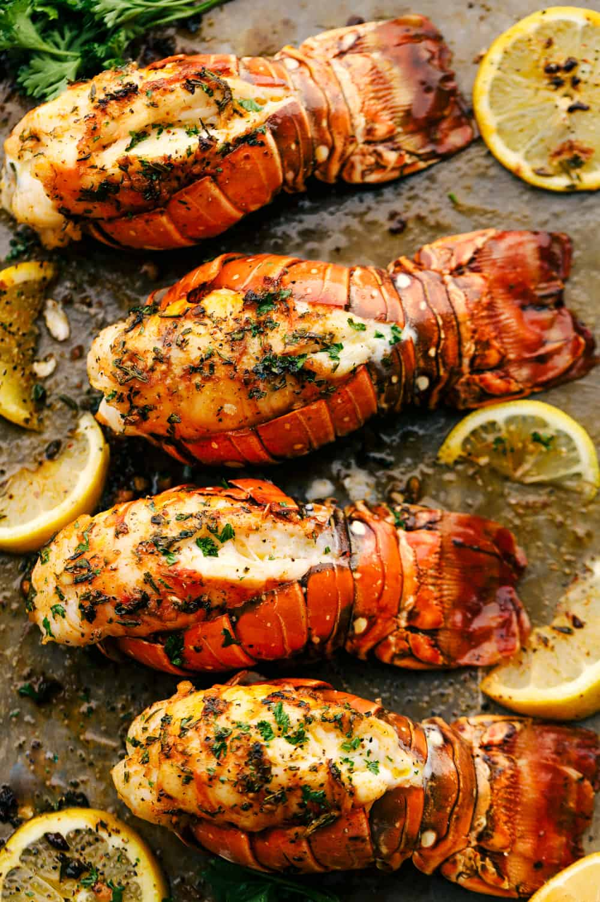

Losbster Tails

Description
Growing up in Maine, lobster tails were always an integral part of our cuisine. This decedant
lobster recipe will is not only easy to prepare, but perfect to share with family and friends.
It's sure to impress and will be melt-in-your-mouth amazing.
Ingredients
- 4 lobster tails
- salt and pepper
- 1/4 cup butter, melted
- 3 garlic cloves, minced
- 1/2 teaspoon paprika
- 1 teaspoon thyme, minced
- 1 teaspoon rosemary, minced
- 1 teaspoon parsley, chopped
Steps
- Preheat the oven to broil or 500 degrees. Start by preparing the lobster.
Using kitchen shears butterfly the tail by cutting down the center.
Loosen the meat and pull the lobster meat upward. Salt and pepper the meat and set on a baking sheet.
- In a small bowl whisk together the melted butter, garlic, paprika, thyme, rosemary, and parsley.
Spread evenly on each lobster tail.
- ABroil the lobster tails for about 8-10 minutes or until the meat is opaque and lightly brown on the top.
Serve with melted butter if desired.